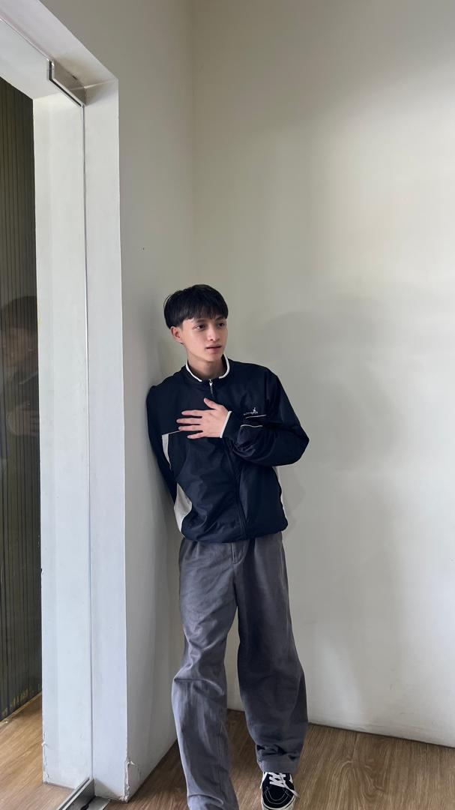

Syed Muhammad Nizamuddin bin Syeed Zainal Abidin
Date of Birth:17/11/2004
Age:20
Place of Birth:Hospital Umum Sarawak
Assalamualaikum, hello, hi, nice to meet you and thank you for taking the time to get to know me. I count myself as an ambivert, which means that there are times of the day when I talk a lot and times when I don't; it essentially means that I need to recharge my battery, which is funny to think about. I have five siblings, the fourth of who is me. Aside from that, I believe that happiness is the key to life, and I will continue to strive for it every day. When I am down, I will do my best to keep myself entertained, as I always have.
